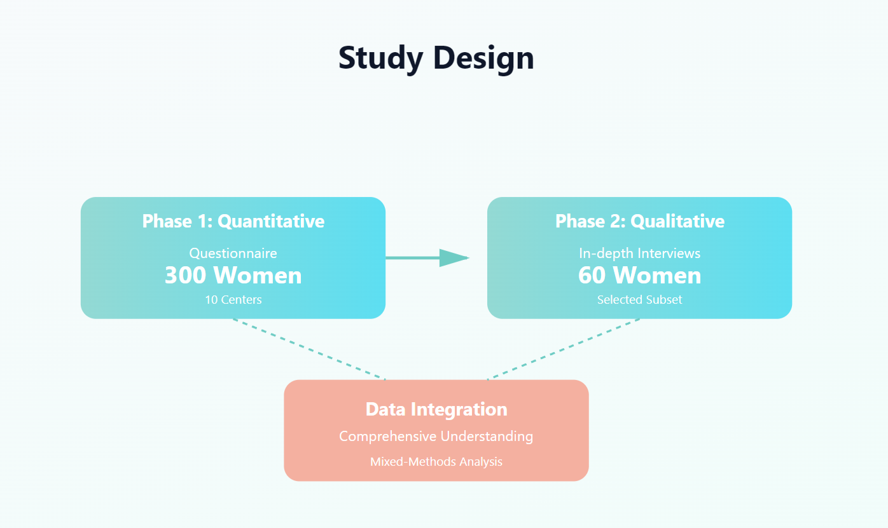
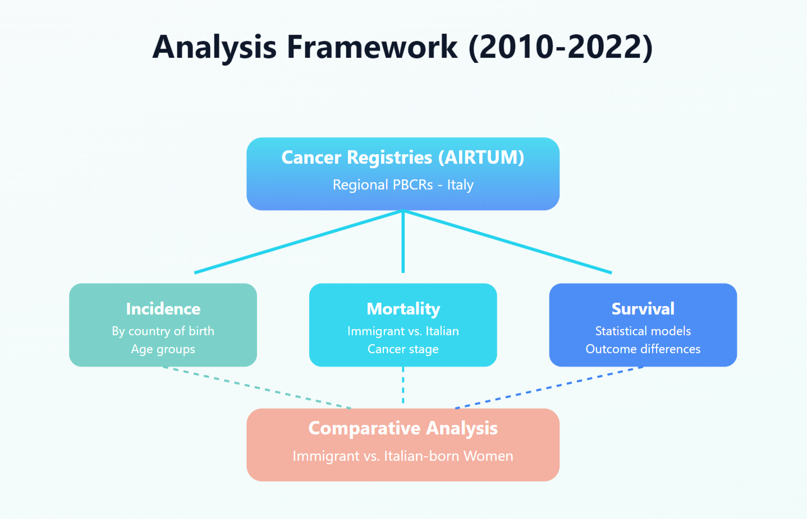
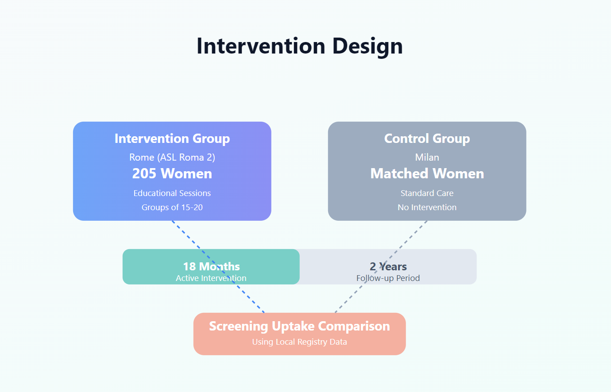

Specific Objectives
1. Collect quantitative data on perceived determinants of early detection
2. Collect qualitative data on experiences in accessing screening and care
3. Integrate and compare data to understand factors affecting equal access
The DCIMIT project comprises three complementary studies designed to provide comprehensive insights into cervical cancer disparities among immigrant populations in Italy
Understanding Barriers and Facilitators
This study aims to investigate the factors that influence early diagnosis and access to care in immigrant women with cervical cancer in Italy, within a framework of social justice and right to health.
1. Collect quantitative data on perceived determinants of early detection
2. Collect qualitative data on experiences in accessing screening and care
3. Integrate and compare data to understand factors affecting equal access
PARTICIPANTS: 300 immigrant women with cervical cancer
CENTERS: 10 clinical centers across Italy
APPROACH: Two-phase design: questionnaire (300 women) + in-depth interviews (60 women)
- Aged above 18
- Diagnosed with cervical cancer or HSIL in Italy within past 5 years
- Born in a High Migratory Pressure Country
- Currently living in Italy

Population-Level Analysis
A register-based study analyzing data from regional population-based cancer registries across Italy in collaboration with AIRTUM, covering the years 2010-2022.
1. Evaluate cervical cancer incidence and mortality among immigrant vs. Italian-born women
2. Evaluate differences in survival rates between groups
3. Analyze patterns by country of birth, age, and cancer stage
DATA SOURCE: Regional population-based cancer registries (PBCRs)
PERIOD: 2010-2022
PARTNER: Italian Association of Cancer Registries (AIRTUM)
Cervical cancer incidence, mortality, and survival rates compared between immigrant and non-immigrant women by country of birth

Community-Based Intervention
Testing a community-based intervention designed for healthy immigrant women, culturally and linguistically tailored to reduce barriers and increase participation in cervical cancer screening.
1. Design and implement culturally targeted intervention for healthy immigrant women
2. Obtain screening status data at baseline and post-intervention
3. Evaluate intervention effectiveness using generalized estimation equations
LOCATION: Rome (ASL Roma 2)
Participants: 205 healthy immigrant women (no screening in last 5 years)
DURATION: 18 months active intervention + 2 years follow-up
- Aged 25-65
- Born in Eastern Europe, Asia, or South-Central America
Interactive 2-hour educational sessions in groups of 15-20
Matched immigrant women in Milan
